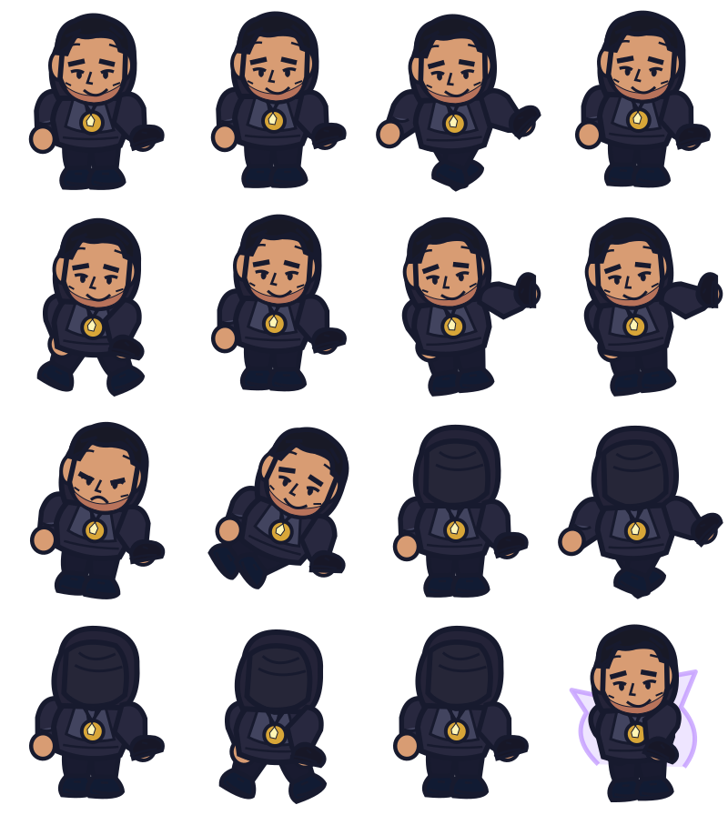
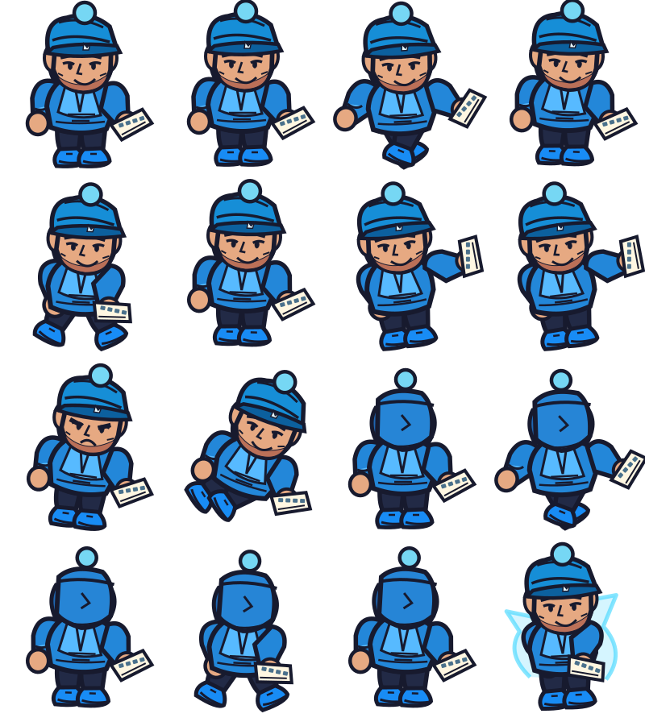
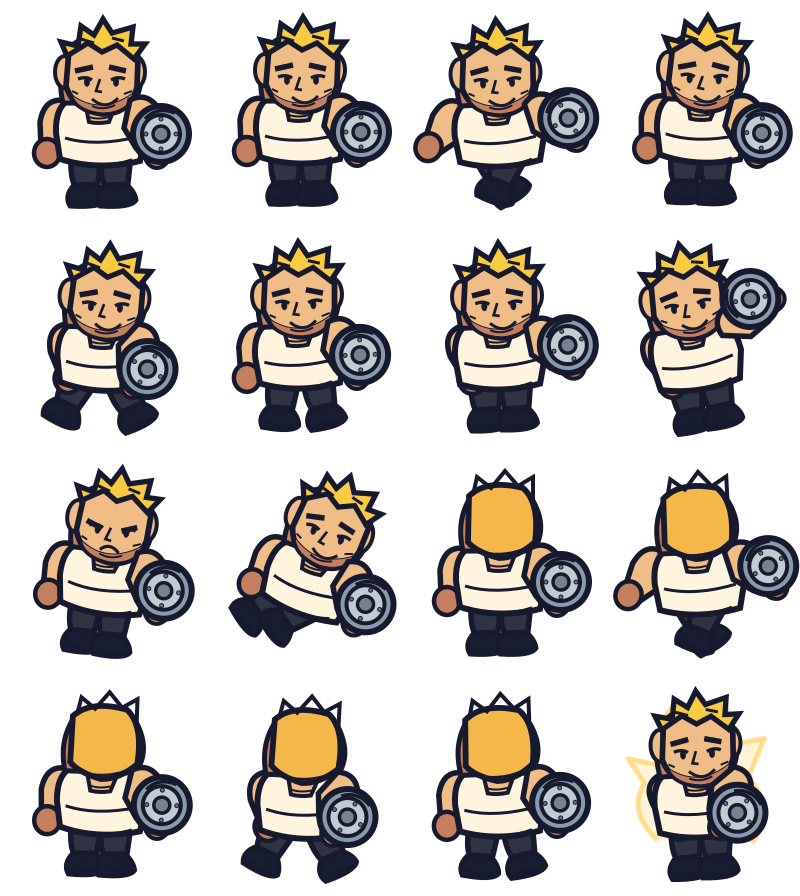

SIGMA
Silhueta escura · cap na mão · medalhão dourado
Três protagonistas redesenhados para o estilo Cartoon Arcade. Estas são as folhas SVG que o Phaser carrega no jogo; cada uma contém 16 poses originais. A animação nesta página serve para rever silhuetas e consistência antes da tua aprovação.
Silhueta escura · cap na mão · medalhão dourado
Beanie azul · hoodie · teclado
Cabelo loiro · corpo largo · escudo
4 colunas × 4 linhas, com transparência e pivô partilhado. Revisão de escala, movimento, atributos e poses traseiras.


